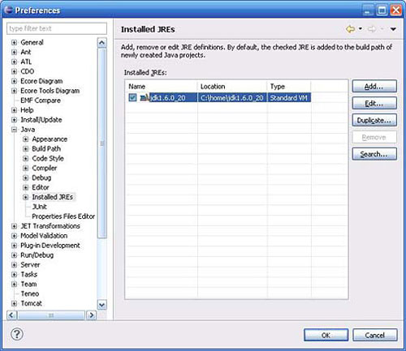

Visión general de la plataforma Java
La tecnología Java se usa para desarrollar aplicaciones para un amplio alcance de entornos, desde dispositivos del consumidor hasta sistemas empresariales heterogéneos.
En esta sección, obtenga una vista de alto nivel de la plataforma Java y sus componentes.
Vea Recursos para aprender más acerca de los componentes de la plataforma Java discutidos en esta sección.
El lenguaje Java
Como cualquier lenguaje de programación, el lenguaje Java tiene su propia estructura, reglas de sintaxis y paradigma de programación.
El paradigma de programación del lenguaje Java se basa en el concepto de programación orientada a objetos (OOP), que las funciones del lenguaje soportan.
El lenguaje Java es un derivado del lenguaje C, por lo que sus reglas de sintaxis se parecen mucho a C: por ejemplo,
los bloques de códigos se modolarizan en métodos y se delimitan con llaves ({ y }) y las variables se declaran antes de que se usen.
Estructuralmente, el lenguaje Java comienza con paquetes. Un paquete es el mecanismo de espacio de nombres del lenguaje Java.
Dentro de los paquetes se encuentran las clases y dentro de las clases se encuentran métodos,
variables, constantes, entre otros. En este tutorial, aprenderá acerca de las partes del lenguaje Java.
El compilador Java
Cuando usted programa para la plataforma Java, escribe el código de origen en archivos .java y luego los compila.
El compilador verifica su código con las reglas de sintaxis del lenguaje,
luego escribe los códigos byte en archivos .class. Los códigos byte son instrucciones estándar destinadas a ejecutarse en una Java Virtual Machine (JVM).
Al agregar este nivel de abstracción,
el compilador Java difiere de los otros compiladores de lenguaje, que escriben instrucciones apropiadas para el chipset de la CPU en el que el programa se ejecutará.
Instale JDK 6
Siga estos pasos para descargar e instalar JDK 6:
- Navegue hasta Java SE Downloads y haga clic en el recuadro Java Platform (JDK) para visualizar la página de descarga de la áltima versión del JDK (JDK 6,
actualización 21 al momento de escritura).
- Haga clic en el botón Download.
- Seleccione la plataforma del sistema operativo que necesita.
- Se le pedirá el nombre de usuario y contraseña de su cuenta. Ingréselos si tiene una cuenta,
regístrese si no la tiene o puede hacer clic en Continue para saltar este paso y continuar para hacer la descarga.
- Guarde el archivo en su unidad de disco duro cuando se lo solicite.
- Cuando se complete la descarga, ejecute el programa de instalación.
(El archivo que acaba de descargar es un archivo ZIP autoextraíble que también es el programa de instalación).
Instale el JDK en su unidad de disco duro en un una ubicación fácil de recordar (por ejemplo, C:\home\jdk1.6.0_20 en Windows o ~/jdk1.6.0_20 en Linux).
Es una buena idea codificar el námero de actualización en el nombre del directorio de instalación que usted elija.
Ahora tiene un entorno Java en su máquina. A continuación, instalará el IDE Eclipse.
Instale Eclipse
Para descargar e instalar Eclipse, siga estos pasos:
- Navegue hasta Eclipse Galileo Sr2 Packages.
- Haga clic en Eclipse IDE for Java Developers.
- Bajo los Enlaces de descarga en el lado derecho, seleccione su plataforma.
- Seleccione la réplica desde la cual quiere hacer la descarga, luego guarde el archivo en su unidad de disco duro.
- Extraiga los contenidos del archivo .zip a una ubicación en su disco duro que pueda recordar fácilmente (por ejemplo, C:\home\eclipse en Windows o ~/eclipse en Linux).
Configure Eclipse
El IDE Eclipse se coloca encima del JDK como una extracción átil pero todavía necesita acceder al JDK y sus diversas herramientas.
Antes de que pueda usar Eclipse para escribir el código Java,
tiene que indicarle dónde está ubicado el JDK.
Para configurar su entorno de desarrollo Eclipse:
- Inicie Eclipse al hacer doble clic en eclipse.exe (o el ejecutable equivalente para su plataforma).
- Aparecerá el Iniciador del espacio de trabajo, que le permitirá seleccionar una carpeta raíz para sus proyectos Eclipse.
Elija una carpeta que recuerde fácilmente, por ejemplo C:\home\workspace en Windows o ~/workspace en Linux.
- Descarte la pantalla Bienvenido a Eclipse.
- Haga clic en Window > Preferences > Java > Installed JREs. La Ilustración 1 muestra la pantalla de configuración para el JRE:
Ilustración 1. Configuración del JDK que Eclipse utiliza.

- Eclipse indicará un JRE instalado. Necesita asegurarse de usar el que descargó con JDK 6. Si Eclipse no detecta automáticamente el JDK que usted instaló, haga clic en Add...
y en el siguiente diálogo Standard VM, luego haga clic en Next.
- Especifique el directorio de inicio del JDK (por ejemplo, C:\home\jdk1.6.0_20 en Windows), luego haga clic en Finish.
- Confirme que el JDK que quiere usar esté seleccionado y haga clic en OK
Ir al principio
TABLA DE CONTENIDO